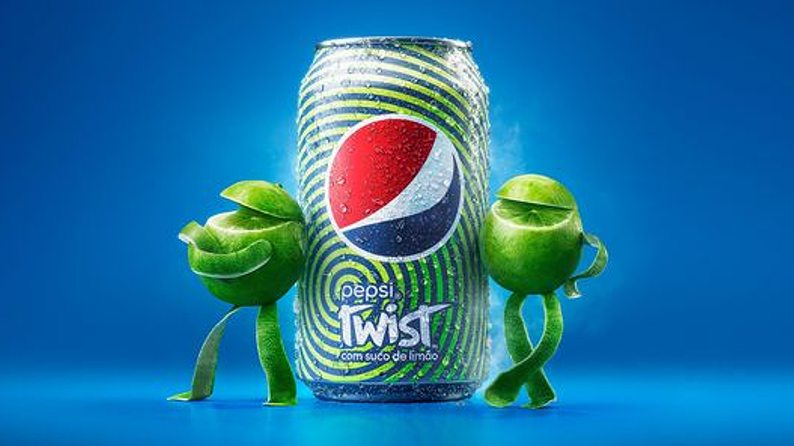
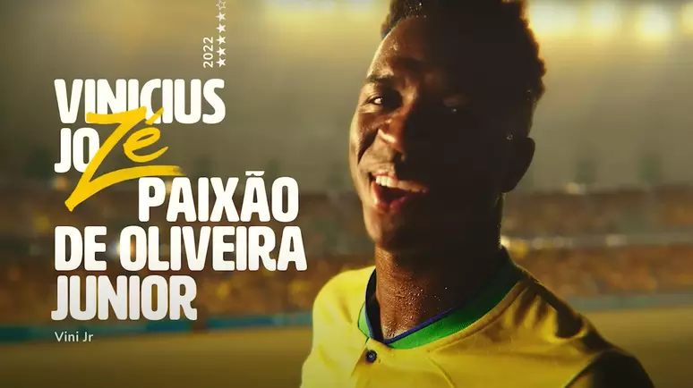
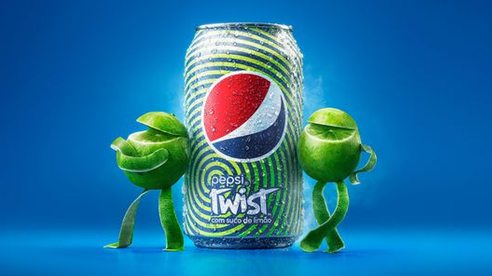
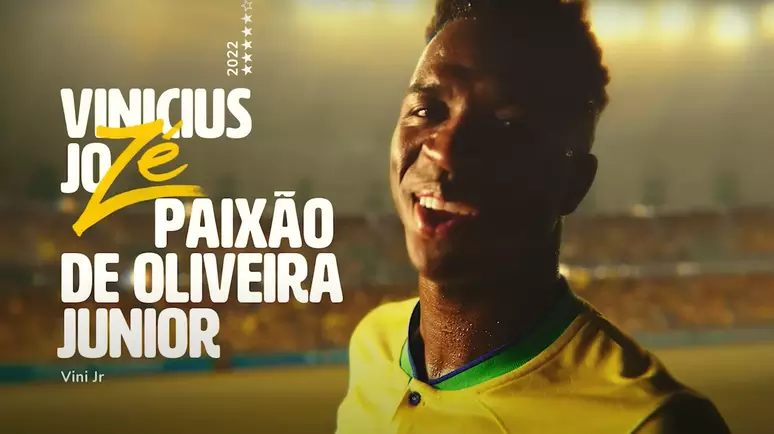

Time da FURIA vai a apresentação de Neymar no Al-Hilal
Integrantes do elenco de CS:GO estão na Arábia Saudita porque participaram do Gamers8
Com a eliminação do Gamers8 logo na estreia, integrantes do time de Counter-Strike: Global Offensive (CS:GO) da FURIA aproveitaram a presença na Arábia Saudita para comparecerem à apresentação de Neymar como reforço do Al-Hilal, no Estádio Rei Fahd, em Riade.
vídeo apresentação do Neymar
A FURIA divulgou a presença de jogadores e treinador no estádio lotado por mais de 67 mil pessoas para recepção do craque, principal contratação do clube saudita para a temporada 2023/2024.
Neymar posa com filho e integrantes do time de CS:GO da FURIA
A FURIA está em Riade porque participou do Gamers8, evento de esportes eletrônicos que conta com competições em 12 modalidades com premiações totalizando US$ 45 milhões (equivalentes a cerca de R$ 210 milhões na cotação atual). Assim como o MIBR, a FURIA perdeu para a europeia NAVI e deus adeus ao campeonato de CS:GO, disputado no sistema de eliminação simples.
Fã de CS:GO, Neymar joga com amigos e acompanha competições, principalmente das quais a FURIA participa. No IEM Major Rio, campeonato mundial de CS:GO ocorrido no Rio de Janeiro, no ano passado, o craque vibrou muito com a vitória da FURIA contra a NAVI nas quartas de final.
Naquele campeonato, Neymar também celebrou vitórias da FURIA com videochamadas para os jogadores, declarou que não estava empolgado para a Copa do Mundo até ver a torcida dos esports no Riocentro e apareceu cantando o hit do público que compareceu ao Major do Rio.
Publicado em 20 de ago de 2023.
Acompanhe o mundo dos games

Tudo dos Esportes eletrônicos no momento

Lançamentos que fizeram e vão fazer sucesso entre os gamers
Recomendações de jogos feitas pelos nossos gamers profissionais
Tudo sobre o mundo dos jogos de fps
ANÚNCIOS


ANÚNCIOS
 


